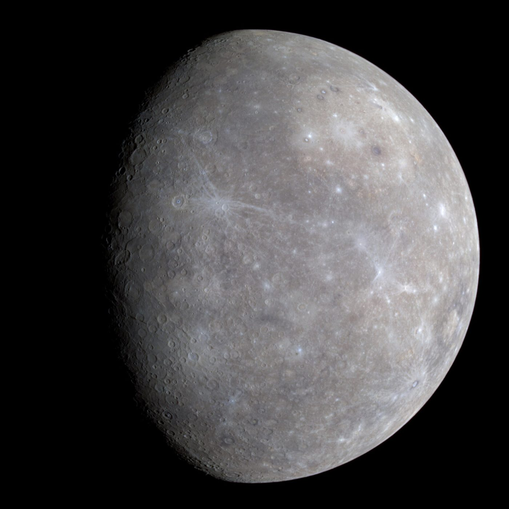
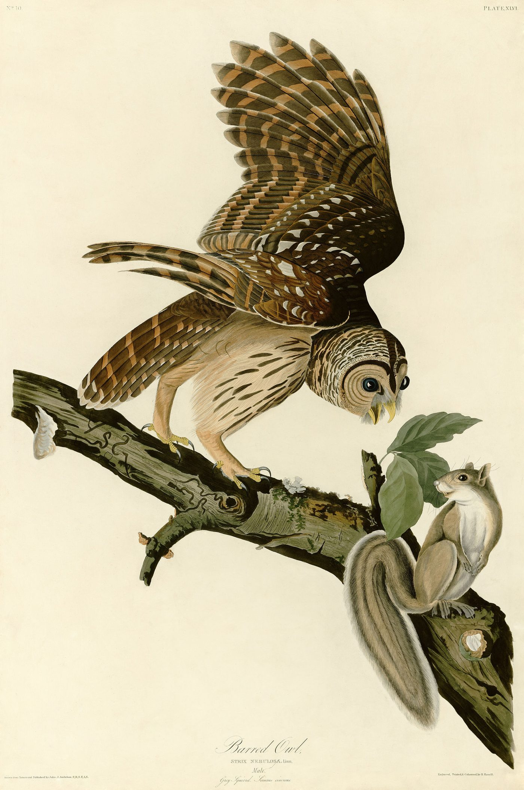
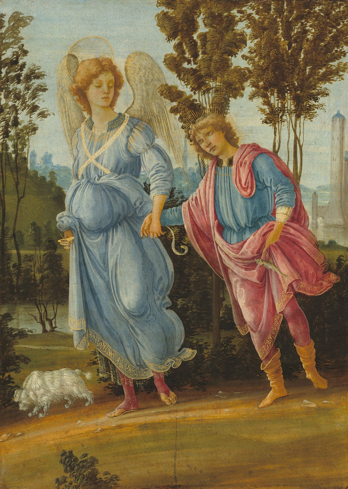
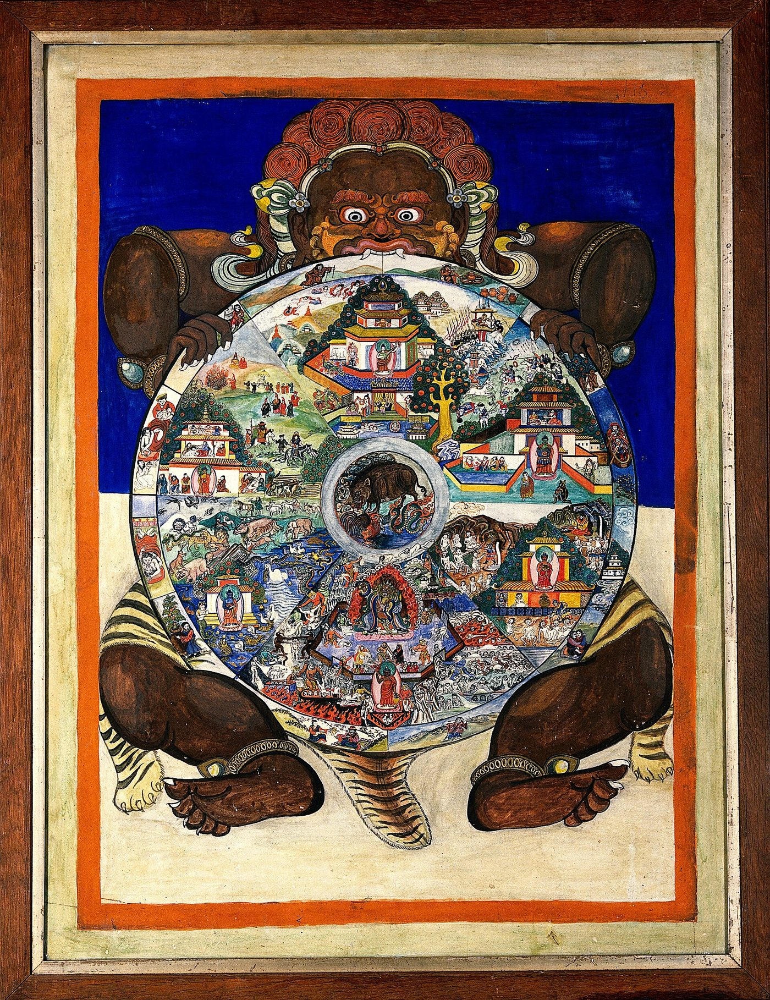
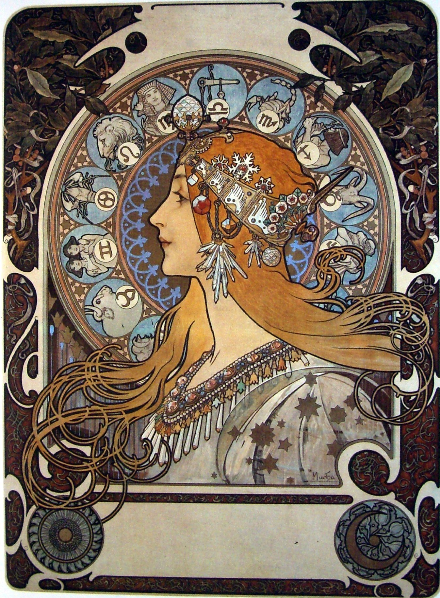
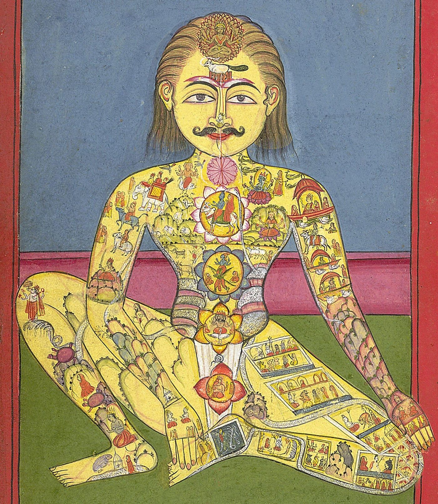
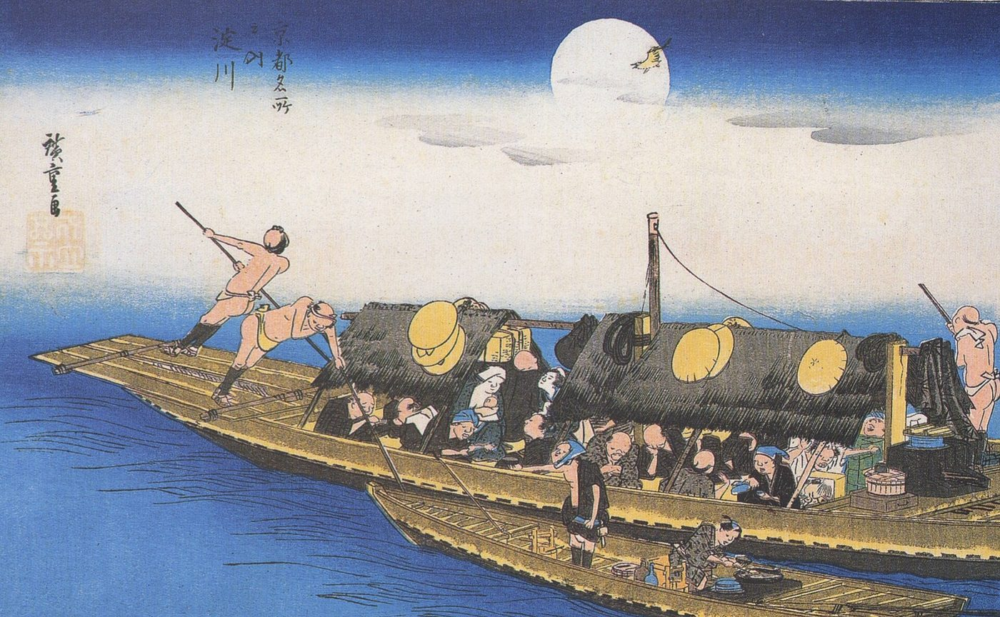
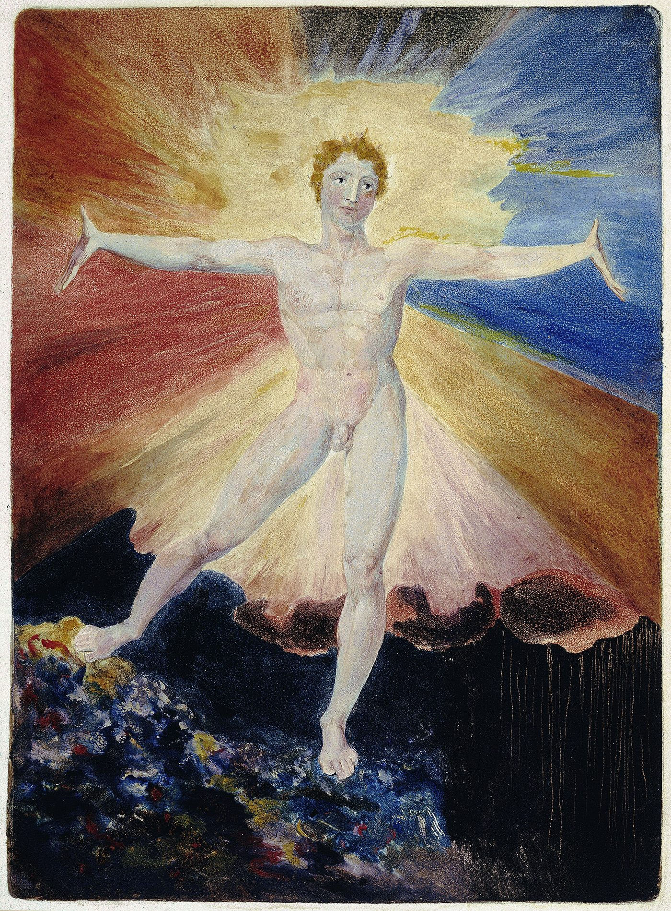
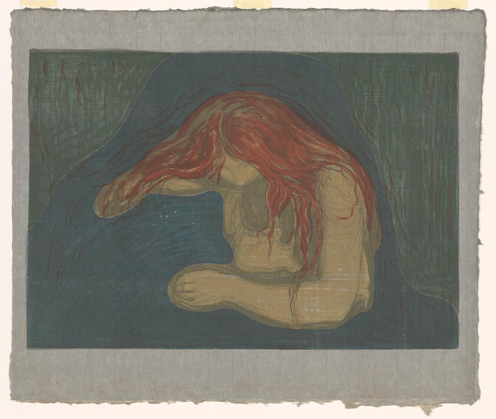

もくじ
いま書いてあるものの一覧です。
計算するもの：月星座を調べる
 ascendant / rising signアセンダント（上昇宮）自分の星座の説明が、どうも自分に合わない。初対面の人から見た自分と、自分で思う自分が違う。占星術がそこに与えている名前が、アセンダント。太陽・月とあわせて「ビッグスリー」と呼ばれる3つ目。出生時刻が要る理由も。
ascendant / rising signアセンダント（上昇宮）自分の星座の説明が、どうも自分に合わない。初対面の人から見た自分と、自分で思う自分が違う。占星術がそこに与えている名前が、アセンダント。太陽・月とあわせて「ビッグスリー」と呼ばれる3つ目。出生時刻が要る理由も。 inner childインナーチャイルド恋愛になると、急に子どもに戻ってしまう。人が離れていくのが怖い。安心できたことがない。自分のなかの「子ども」が傷ついているのか、どう確かめ、どう向き合えばよいと言われているか。
inner childインナーチャイルド恋愛になると、急に子どもに戻ってしまう。人が離れていくのが怖い。安心できたことがない。自分のなかの「子ども」が傷ついているのか、どう確かめ、どう向き合えばよいと言われているか。 angel numbersエンジェルナンバー時計を見ると11:11。車のナンバーが444。同じ数字ばかり目に入る。これは何かの合図なのか。何をすればいいのか。そして、この考え方を作った本人が、後年それを離れたという事実について。
angel numbersエンジェルナンバー時計を見ると11:11。車のナンバーが444。同じ数字ばかり目に入る。これは何かの合図なのか。何をすればいいのか。そして、この考え方を作った本人が、後年それを離れたという事実について。 empathエンパス人混みで消耗する。相手の不機嫌が自分に移る。断れない。ひとりでいたい。自分は弱いのだろうか。それぞれの悩みに、この分野で名前の知られた人たちが何と言っているか。
empathエンパス人混みで消耗する。相手の不機嫌が自分に移る。断れない。ひとりでいたい。自分は弱いのだろうか。それぞれの悩みに、この分野で名前の知られた人たちが何と言っているか。 spiritual awakening覚醒自分がおかしくなったのではないか。まわりの人が分からなくなった。体がつらい。昔のことばかり思い出す。家族に理解されない。それぞれの悩みに、この分野で名前の知られた人たちが何と言っているか。
spiritual awakening覚醒自分がおかしくなったのではないか。まわりの人が分からなくなった。体がつらい。昔のことばかり思い出す。家族に理解されない。それぞれの悩みに、この分野で名前の知られた人たちが何と言っているか。 shadow work影（シャドウワーク）人の嫌なところが気になって仕方ない。同じ失敗を繰り返す。急に怒りが噴き出す。自分を責めてしまう。そうした「自分の見たくない部分」とどう向き合えばよいと言われているか。grounding / earthingグラウンディング（地に足をつける）「グラウンディングが足りない」と言われた。頭ばかり働いて、体がここにない感じがする。ふわふわして、疲れているのに眠れない。この分野で名前の知られた人が勧めている方法、「アーシング」という言葉の来歴とその評価、そして森と裸足について研究の側が言っていること。
shadow work影（シャドウワーク）人の嫌なところが気になって仕方ない。同じ失敗を繰り返す。急に怒りが噴き出す。自分を責めてしまう。そうした「自分の見たくない部分」とどう向き合えばよいと言われているか。grounding / earthingグラウンディング（地に足をつける）「グラウンディングが足りない」と言われた。頭ばかり働いて、体がここにない感じがする。ふわふわして、疲れているのに眠れない。この分野で名前の知られた人が勧めている方法、「アーシング」という言葉の来歴とその評価、そして森と裸足について研究の側が言っていること。 Saturn returnサターンリターン27歳から30歳ごろ、なぜか人生が急に重くなる。仕事も、関係も、住む場所も、いっぺんに問われる気がする。占星術がこの時期に与えている名前と、心理学が同じ時期に与えている名前。synchronicityシンクロニシティ（意味のある偶然）時計を見ると11:11。思い浮かべた人から連絡が来る。「宇宙が何か言っている気がするけれど、何を言っているのか分からない」。この言葉を作ったユングの話と、この分野で名前の知られた人が「何のために起きて、どう扱えばよいか」をどう説明しているか、そして統計と心理学の側の見方。
Saturn returnサターンリターン27歳から30歳ごろ、なぜか人生が急に重くなる。仕事も、関係も、住む場所も、いっぺんに問われる気がする。占星術がこの時期に与えている名前と、心理学が同じ時期に与えている名前。synchronicityシンクロニシティ（意味のある偶然）時計を見ると11:11。思い浮かべた人から連絡が来る。「宇宙が何か言っている気がするけれど、何を言っているのか分からない」。この言葉を作ったユングの話と、この分野で名前の知られた人が「何のために起きて、どう扱えばよいか」をどう説明しているか、そして統計と心理学の側の見方。
Mercury retrograde水星逆行連絡が行き違う。機械が壊れる。約束が流れる。そのたびに「水星逆行だから」と言われる。何が起きていて、何をすればよいと言われているのか。そして、逆行とは実際には何なのか。 starseed / star peopleスターシードここが自分の居場所だと思えない。家族のなかでも、どこか浮いている。子どものころ、よく星空を見上げていた。この分野には、その感覚に「スターシード」という名前があります。何だと言われているのか、しるしは何か、どこから来た言葉なのか。そして「居場所がない」という感覚に心理学がつけている名前。
starseed / star peopleスターシードここが自分の居場所だと思えない。家族のなかでも、どこか浮いている。子どものころ、よく星空を見上げていた。この分野には、その感覚に「スターシード」という名前があります。何だと言われているのか、しるしは何か、どこから来た言葉なのか。そして「居場所がない」という感覚に心理学がつけている名前。
spirit animalスピリットアニマル自分のスピリットアニマルを知りたい。どう見つけると言われているのか。そして、この言葉は使っていいのか——北米先住民の人たちが、この言葉についてどう言っているか。
spirit guideスピリットガイド自分にもいるのか。つながりたいのに何も感じない。前は感じたのに、いなくなった気がする。それぞれの悩みに、この分野で名前の知られた人たちが何と言っているか。日本語の「守護霊」との関係も。
past lives / past life regression前世と、繰り返すパターン同じような恋愛を、相手を変えて繰り返している。理由のない恐怖がある。「前世のせい」と言われることがあるけれど、それはどういう仕組みだと語られていて、何をすればよいと言われているのか。前世療法の来歴と、心理学の側の見方、40年かけて子どもの証言を集めた精神科医のことも。
sun sign太陽星座朝のテレビの「今日の運勢」が当たらない。星座の説明が自分に合わない。誕生日だけで決まる「星座」とは、占星術のなかで何なのか。1930年の新聞に始まった経緯と、心理学が「当たる気がする」理由に与えている名前。dark night of the soulダークナイト・オブ・ザ・ソウル世界が灰色に見える。何をしても意味が感じられない。信じていたものから切り離された気がする。これはいつまで続くのか。それぞれの悩みに、この分野で名前の知られた人たちが何と言っているか。
chakraチャクラ「第一チャクラが閉じている」と言われた。7つのチャクラと虹の色は、どこから来たのか。もとの伝統では何だったのか。日本語の「丹田」との関係。そして、体の症状をチャクラで説明されたときに、知っておきたいこと。 twin ray / twin flameツインレイあの人はそうなのか。どうすれば出会えるのか。離れてしまったときは。追いかけるのをやめられないときは。それぞれの悩みに、この分野で名前の知られた人たちが何と言っているか。
twin ray / twin flameツインレイあの人はそうなのか。どうすれば出会えるのか。離れてしまったときは。追いかけるのをやめられないときは。それぞれの悩みに、この分野で名前の知られた人たちが何と言っているか。 moon sign月星座生まれたときに月がどの星座にあったか。何を表すと言われているのか、自分のはどうやって知るのか、時刻が分からないときはどうするのか。
moon sign月星座生まれたときに月がどの星座にあったか。何を表すと言われているのか、自分のはどうやって知るのか、時刻が分からないときはどうするのか。
surrender / letting go手放す（サレンダー）「手放したときに叶う」と言われるけれど、手放すとは何もしないことなのか。願って、思い描いて、がんばっているのに疲れてしまう。この分野で名前の知られた人はどう答えているのか。日本語にもとからある「他力」と、依存症の回復で使われてきた祈りも、隣に置きます。
higher self / intuitionハイヤーセルフと直観「ハイヤーセルフにつながる」とは何をすることなのか。心の声と、ただの思考はどう見分けるのか。この言葉の由来（1889年の神智学）と、日本語の「真我」、心理学の「内受容感覚」もあわせて。 law of attraction / manifestation引き寄せ（マニフェステーション）願っているのに、叶わない。何をすれば「引き寄せ」になるのか。悪いことが起きたのは自分の考えのせいなのか。それぞれの悩みに、この考え方を広めた人たちと、心理学者が何と言っているか。
law of attraction / manifestation引き寄せ（マニフェステーション）願っているのに、叶わない。何をすれば「引き寄せ」になるのか。悪いことが起きたのは自分の考えのせいなのか。それぞれの悩みに、この考え方を広めた人たちと、心理学者が何と言っているか。
energy vampire / emotional contagion人の感情をもらってしまう人混みで疲れる。誰かと話したあと、理由もなく沈む。どこまでが自分の感情で、どこからが相手のものか分からない。この分野で名前の知られた人が教えている「たったひとつの決まり」と、「エネルギーヴァンパイア」という言葉の来歴、心理学が同じ現象につけている名前。